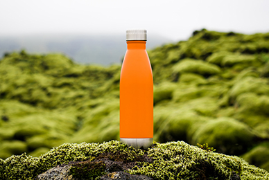
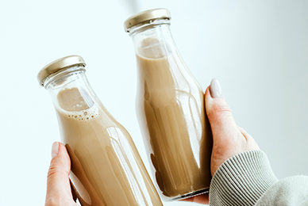
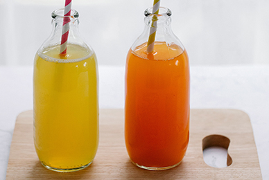
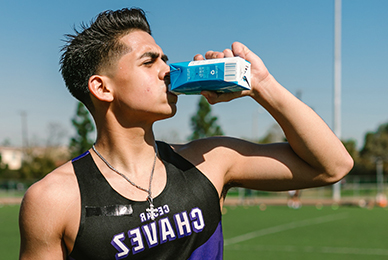

Qu3nch! is the latest

QU3NCH! is the latest craze in the beverage industry,
and it's no surprise why.
This unique drink was created by a young entrepreneur named Sarah Smith,
who saw a need for a more refreshing and hydrating option on the market.
Sarah Qu3nch! founder
Sarah had always been an avid athlete and was always on the lookout for ways to
improve her performance. She quickly became frustrated with the lack of options
available, and decided to take matters into her own hands. After months of
research and experimentation, Sarah finally created the perfect formula
for QU3NCH!.
Qu3nch! ingredient

The main ingredient in QU3NCH! is a special blend of electrolytes and vitamins
that work together to help the body hydrate faster and more efficiently.
This makes it the perfect drink for athletes, as well as anyone who is
looking to stay hydrated throughout the day.
Qu3nch! a health drink

But QU3NCH! isn't just for athletes. It's also a great option for people who
are looking to improve their overall health and wellness.
The electrolytes in QU3NCH! can help regulate blood pressure and support a
healthy immune system, making it a valuable addition to anyone's diet.
Qu3nch! refreshing and satisfying

One of the things that sets QU3NCH! apart from other sports drinks is its
delicious taste. Sarah worked tirelessly to come up with a formula that was
both refreshing and satisfying, and it shows in the final product.
QU3NCH! comes in three delicious flavors - lemon, berry, and orange - all of
which are sure to satisfy even the pickiest of palates.
Sarah's passion for health and wellness

Sarah's passion for health and wellness extends beyond just the creation
of QU3NCH!. She is also a strong advocate for sustainability and uses
eco-friendly packaging for all of her products. This commitment to the
environment sets QU3NCH! apart from other beverage companies and has helped
it gain a loyal following.
Qu3nch! electrolytes and vitamins
QU3NCH! has quickly become a popular choice among athletes, fitness enthusiasts,
and health-conscious individuals all over the world. Its unique blend
of electrolytes and vitamins has helped it stand out in a crowded market,
and Sarah's commitment to sustainability has only added to its appeal.
The future of Qu3nch!
So, what's next for QU3NCH! and its creator Sarah Smith? With the success
the company has seen so far, it's clear that the sky is the limit. Sarah is
already working on new and innovative ways to improve the formula and make
it even more accessible to people all over the world.
The industry top is Qu3nch!
One thing is for sure - QU3NCH! is here to stay, and its creator Sarah
Smith is sure to continue making waves in the beverage industry
for years to come. If you're looking for a refreshing, hydrating,
and sustainable drink option, look no further than QU3NCH!.